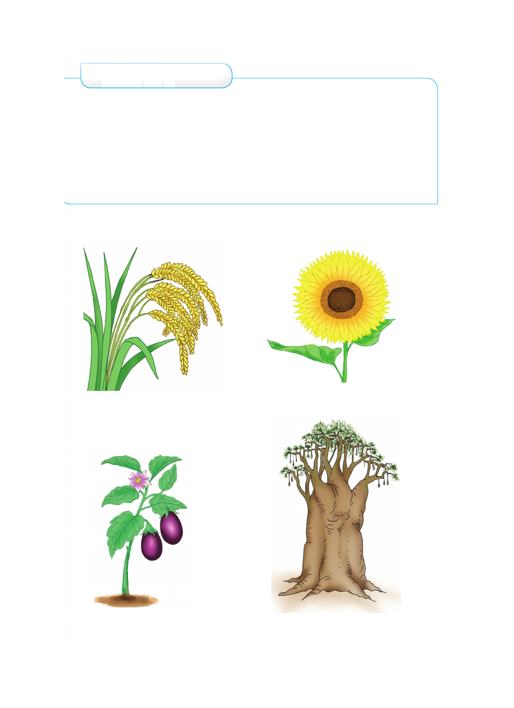

Zoezi la 1
1. Taja wanyama wafugwao nyumbani.
2. Taja faida nne za wanyama wafugwao.
3. Taja wanyama wasiofugwa.
4. Eleza faida mbili za wanyama wasiofugwa.
5. Taja wanyama wasiofugwa wanaopatikana katika
mazingira yako.
Mimea ya aina mbalimbali
mpunga alizeti
biringanya mbuyu
Zoezi la 1 1. Taja wanyama wafugwao nyumbani. 2. Taja faida nne za wanyama wafugwao. 3. Taja wanyama wasiofugwa. 4. Eleza faida mbili za wanyama wasiofugwa. 5. Taja wanyama wasiofugwa wanaopatikana katika mazingira yako. Mimea ya aina mbalimbali mpunga alizeti biringanya mbuyu